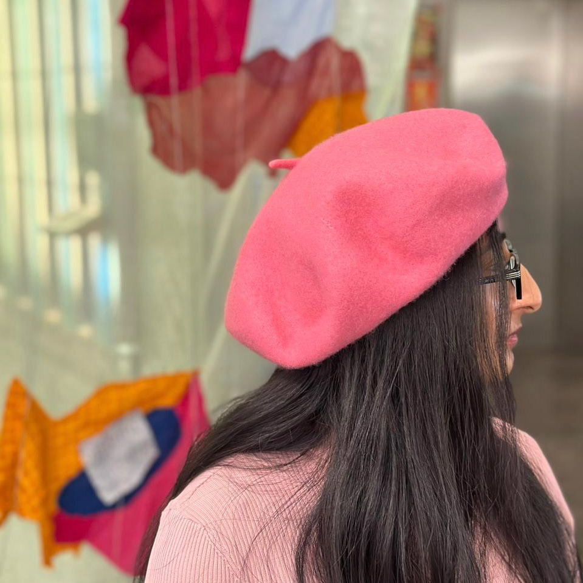

Afifa Bari (B.1997) is an interdisciplinary artist based in Toronto. She earned her BFA from York University in 2020, and her MFA from OCAD University in 2024.
Through representational art, she examines the contemporary world through the lens of capitalism, uncovering consumerist values in her work. Her work focuses on material possessions and the desire for materialism in the newly advancing society. She discusses evolving ideas of luxury in modern society from a socio-political and environmental outlook.
Her work also focuses on ideas surrounding slow art and slow living in an anti-capitalist approach against hustle culture. She currently works as a freelance artist and takes commissions.